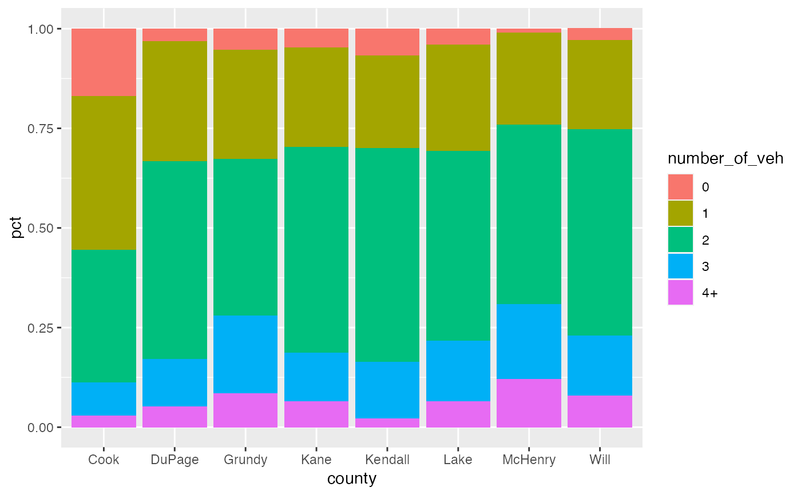

A test dataset containing vehicle ownership rates in the seven county region of northeastern Illinois.
vehicle_ownershipA tibble. 40 rows and 3 variables
Char. Name of county
Char. Number of vehicles owned by household
Numeric. Share of households with the given number of vehicles (values between 0 and 1)
CMAP Travel Inventory Survey Data Summary https://www.cmap.illinois.gov/documents/10180/77659/Travel+Inventory+Survey+Data+Summary_weighted_V2.pdf/d4b33cdd-1c44-4322-b32f-2f54b85207cb
# A stacked bar chart
ggplot(vehicle_ownership,
aes(x = county, y = pct, fill = number_of_veh)) +
geom_bar(position = position_stack(), stat = "identity")
